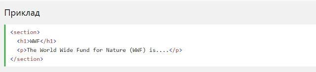

HTML5 Семантичні елементи
Семантичний елемент чітко описує його значення як для браузера, так і
для розробника.
Приклади не семантичних елементів: < div> і < span>- нічого не говорить
про його вміст.
Приклади семантичних елементів: < form>, < table>і < article>- чітко
визначає його зміст.
HTML5 < section> елемент
Елемент < section>визначає розділ в документі.
Згідно з документацією в3к'с HTML5: "розділ представляє собою
тематичну угруповання контенту, зазвичай з заголовком".
Домашня сторінка зазвичай може бути розділена на розділи для
ознайомлення, змісту і контактної інформації.

HTML5 < article> елемент
Елемент < article>визначає незалежний, автономний вміст.
Стаття повинна мати сенс самостійно, і вона повинна мати можливість
читати його незалежно від іншої частини веб-сайту.
Приклади того, де можна використовувати елемент < article>:
- Повідомлення на форумі
- Блозі
- Газетна стаття